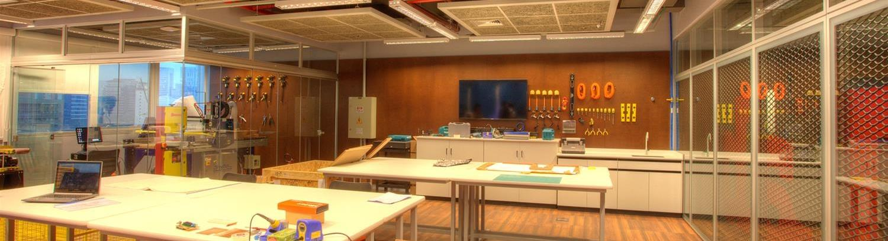

- clique aqui 
OS PROJETOS:
Estes projetos abrangem as mais diversas áreas do conhecimento e tem como intuíto concluir os cursos a qual fazem parte, unindo conhecimento à prática ao colocar os alunos para resolverem problemas do mundo real. Além disso, estes projetos exigem trabalho em grupo e forçam os alunos à trabalharem conjuntamente, superando as adversidades e aprendendo a conciliar suas diferenças.
Se você deseja conhecer um pouco mais a fundo a respeito dos respectivos projetos de cada curso...